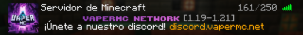
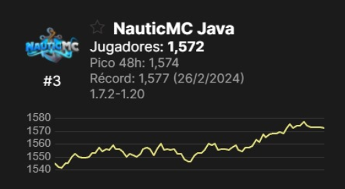
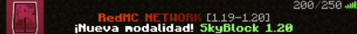

Administración, Configuración y Desarrollo
Configurador y desarrollador de servidores Minecraft. Especializado en modalidades completas, resolución de bugs y creación de plugins personalizados.
Experiencia
Actualmente:
- VaperMC (Head-Dev) – Al igual que en RedMC, me encargo de la organización del equipo,
creación de modalidades enteras, resolución de errores y creación de plugins
Ver la prueba
Anteriormente:
- NauticMC (Admin) – Servidor del Creador de Contenido vMario (>4M subs). Estuve
trabajando casi 2 años coordinando al staff y administrando el servidor.
Ver la prueba | Serie Staff Series
- RedMC (Head-Dev) – Organicé al equipo y me encargué del desarrollo de modalidades
completas,
resolución de bugs complejos y creación de plugins.
Ver la prueba
- KeiferMC (Configurador y Desarrollador) – Preparé eventos para un youtuber de más de 5M subs. También configuré parte del survival del servidor.
- Zaphirus (Owner & Dev) – Fui dueño de este servidor. Me encargué de toda la
configuración y desarrollo.
Ver la prueba - StoneCraft (Config) – Contratado para configurar este servidor.
Ver la prueba - Imperio de Biomas (Admin & Dev) – Desarrollo completo del servidor para una serie de
Creadores de Contenido, único configurador.
Ver la prueba
Entre otros... tanto servidores como encargos individuales
Plugins Propios Públicos
→ Mi cuenta de GitHub- VelocityUtils – Plugin para proxys Velocity con utilidades esenciales para jugadores y administradores. También: VelocityUtilsLink para integración con backend.
- CustomChat – Plugin de chat moderno para Paper con soporte PlaceholderAPI y amplia personalización.
- DiscordBridgeVelocity – Vincula Minecraft con Discord para cuentas y distintas tareas.
- CustomPack – Añade pack de servidor, opcional o global con CustomPackVelocity.
- LitebansPunishments – Menú customizable para sancionar usando LiteBans.
- Fork de SkyWarsReloaded – Fork con corrección de bugs y nuevas funcionalidades.
- ClimateEvents – Eventos climáticos donde los jugadores deben resguardarse.
- XrayDetector – Notificaciones al romper minerales masivamente. Soporte Discord webhooks.
- CustomPrefixes – Permite a usuarios customizar su prefix de LuckPerms.
Entre otros más...
Plugins que Domino
- Core del servidor: Essentials, LuckPerms, MultiverseCore, etc. **
- Menús: DeluxeMenus, CommandPanels *
- Tab & Scoreboard: TAB by Neznamy, AnimatedScoreboard *
- Sistema de sanciones: LibertyBans, LiteBans *
- Chat: AlonsoChat, ChatSentinel, Chatty, EzChat *
- Eventos e ítems custom: ConditionalEvents, ServerVariables, ExecutableItems, ItemEditor *
- Tienda: Tebex
- Otros: Forcepack, PlayerTimeLimit, Sleep-Most, DecentHolograms, Drop2Inventory, Realmines, Shopkeepers, etc. **
* Los que mejor sé usar ** Hay muchos para citar